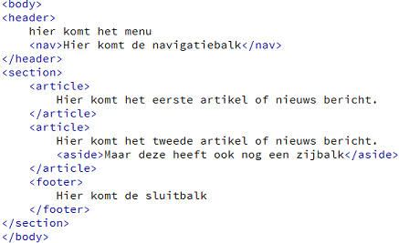
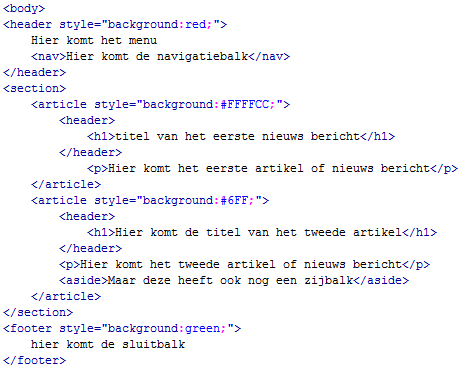

Structuur
Met de komst van HTML5 is de structuur van de webpagina’s verbeterd. Voorheen was je pagina altijd in gedeeld door middel van divisies. Omdat je de naam van deze divisies natuurlijk zelf kon bepalen (door de naam van de ID’s te kiezen) kon de structuur voor andere al snel onduidelijk worden. In HTML5 zijn daarom de volgende tags in het leven geroepen.
| Structuur tags | |
| <header> | Geeft de header sectie aan van de webpagina |
| <nav> | Geeft het navigatie gedeelte van de webpagina aan. |
| <section> | Hierbinnen komt de content van de webpagina te staan. |
| <article> | Staat vaak binnen de <section> en geeft een stuk tekst aan. |
| <aside> | Geeft de zijbalk aan, ook vaak binnen <section>. |
| <footer> | Geeft de footer sectie aan van de webpagina. |
Al deze tags hebben geen opmaak. Ze zijn er puur voor om de structuur van de webpagina aan te geven. Dit gaan we nu testen.
| Opdracht 1: structuur toevoegen |
Open een nieuw leeg HTML bestand.
|
| Voorbeeld 4-1 |
|  |
Je zult zien dat het nog niets spectaculairs oplevert. Dit komt omdat aan de tags geen standaard opmaak gegeven is. Alleen dat elke tag op een nieuwe regel begint. Waarom zou je dit dan doen? Voor Google is dit wel belangrijk. Deze leest de webpagina namelijk beter en onderscheid daardoor de content beter van de header en footer. Google kan daardoor beter de waarde van je webpagina bepalen.
De tags kunnen door elkaar gebruikt worden. De <nav> hoeft dus niet binnen de <header> te staan. Daarnaast kan je de <header> ook binnen <article> gebruiken. Dan geldt het voor de header van dat artikel.
| Opdracht 2: structuur uitbreiden |
Open bestand opdracht4-1.html
|
| Voorbeeld 4-2 |
|  |
De kunst bij het structureren van je webpagina is om, zodra je een webpagina ontworpen hebt in Photoshop of op papier, te bepalen hoe je de webpagina met deze tags kan indelen. Wat is de header? Wat is de navigatiebalk (menu)? Wat zijn artikelen en wat is de zijbalk?
| Opdracht 3: structuur bekijken |
Ga naar de website http://www.rekenmachineonline.com
|
Oude webbrowsers (Internet Explorer 9 en lager) ondersteunen geen HTML5 en kennen dus ook de structuur tags niet. Daardoor zou je deze tags dus niet kunnen gebruiken voor oude browsers. Daar is een workaround voor gevonden en die heet HTML5shiv. Het is een Javascript library welke ervoor zorgt dat ook in de oudere browsers de HTML5 tags herkend worden. Daardoor kan je deze dus gewoon gebruiken en ook opmaak of classes meegeven.
| Opdracht 4: HTML5shiv toevoegen |
Open het bestand opdracht4-2.html
<!--[if IE]> <script src="http://html5shiv.googlecode.com/svn/trunk/html5.js"></script> <![endif]--> |